Figura 06
MÓDULO JURÍDICO
O objetivo deste módulo é controlar as petições geradas/emitidas, permitindo o setor jurídico da instituição saber se a inicial foi parcelada ou quitada no sistema, ou consultar uma inicial e verificar seu histórico dentro da instituição.
Sempre que no manual for mencionado a expressão “Inicial do Foro “, devemos considerar como uma petição emitida. A petição que dá origem a todo o controle deste módulo é chamada de petição inicial.
Nesse menu são cadastrados os advogados responsáveis pelos processos da instituição, pois ao gerar uma petição no sistema, esta precisa estar vinculada a um advogado.
No caso de necessidade de alteração de nome no cadastro de advogados, isso deve ser efetuado no CGM.
É permitida a exclusão do advogado, quando este não estiver vinculado a nenhuma petição.
Descrição dos campos abaixo e modelo de cadastro conforme Figura 01.
Código: Colocar o código do CGM do Advogado. Obrigatório.
OAB: Colocar o registro do Advogado na OAB. Obrigatório.
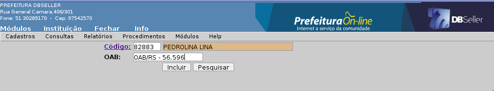
Figura
01
Nesse menu é cadastrado um setor do foro aonde o processo será distribuído, para o melhor controle dos advogados dos processos no foro.
É utilizado no cadastro do processo em uma petição.
O sistema permite a exclusão da vara, quando esta não estiver vinculada a nenhuma Inicial do Foro.
Descrição dos campos abaixo e modelo de cadastro conforme Figura 02
Código: O campo é gerado automático.
Descrição: Preencher o nome da Vara do Foro. Obrigatório.
Figura
02
Nesse menu é cadastrado a localização da Comarca do Foro na qual a cidade pertence.
A localização é utilizada quando é feita a inclusão da Inicial do Foro.
O sistema permite a exclusão da localização, quando esta não estiver vinculada a nenhuma inicial.
Descrição dos campos abaixo e modelo de cadastro conforme Figura 03.
Código: O campo é gerado automático.
Descrição: Preencher o nome do local da comarca do Foro, obrigatório.
Figura
03
Nesse menu é cadastrado o tipo de petição para o controle dos processos referente ao seu andamento no foro.
O sistema trás como padrão dois tipos de petições: parcelamento e quitação.
O sistema não permite a exclusão dos tipos de petição no sistema.
Descrição dos campos abaixo e modelo de cadastro conforme Figura 04
Código: O campo é gerado automático.
Descrição: Preencher o nome do tipo de petição, obrigatório.
Figura
04
Nesse menu são cadastradas as fases que a Inicial do Foro percorre dentro da instituição, para melhor acompanhamento do setor jurídico, permitindo ao usuário acompanhar o andamento da inicial através da consulta de inicial.
Não permite a exclusão das situações que são padrão do sistema.
Descrição dos campos abaixo e modelo de cadastro conforme Figura 05
Código: O campo é gerado automático.
Descrição: Preencher o nome da situação, obrigatório.
Figura
05
É feita a consulta financeira dos débitos dos contribuintes, a descrição dessa consulta está no Módulo Arrecadação, conforme Figura 06 .
Figura
06
Gera uma consulta da(s) certidão(s) selecionadas nos filtros. Na consulta mostra todos os dados da certidão.
Descrição dos campos abaixo e modelo da consulta na Figura 07.
Matrícula: Preencher o código da Matrícula ou clicar no link para pesquisar.
Inscrição: Preencher o código da Inscrição Municipal ou clicar no link para pesquisar.
CGM: Preencher o código do CGM ou clicar no link para pesquisar.
Certidão: Preencher o código da Certidão ou clicar no link para pesquisar.
Figura
07
Gera uma consulta da(s) Inicial(s), selecionadas nos filtros da consulta. Essa consulta mostra um histórico da situação dessa Inicial no sistema, com a data que foi emitida, registrada no foro, parcelada ou quitada.
Podemos consultar as petições ativas no sistemas ou as que foram anuladas.
Descrição dos campos abaixo e modelo da consulta na Figura 08.
Código da Inicial: Preencher o código da inicial ou clicar no link para pesquisar.
Processo: Preencher o código de processo ou clicar no link para pesquisar.
Situação: Preencher o código da situação ou clicar no link para pesquisar.
Advogado: Preencher o código do advogado responsável pelo(s) processo(s) ou clicar no link para pesquisar.
Localização: Preencher o código de localização do foro ou clicar no link para pesquisar.
Tipo: Selecionar as iniciais ativas no sistemas ou as iniciais que já foram anuladas.
Data Inicial: Preencher a data inicial do período da consulta da Inicial. Quando preencher esse campo é obrigatório o campo Data Final.
Data Final: Preencher data final do período da consulta da Inicial. Ao preencher esse campo é obrigatório o campo Data Inicial.
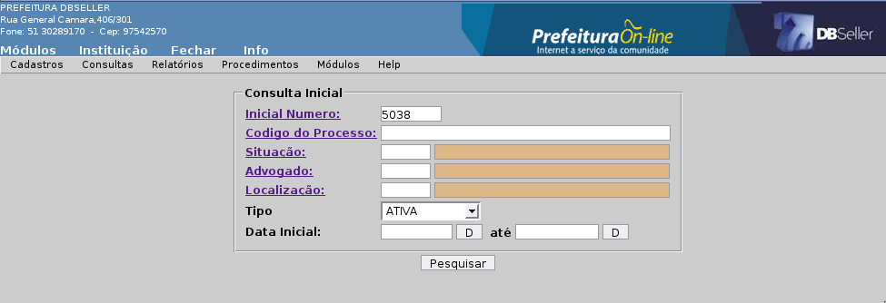
Figura
08
Ao consultar uma inicial, o sistema busca os dados como as suas certidões e seu histórico de situação, conforme a Figura 09.
Emite a Inicial novamente com valores atualizados, para os casos de cancelamento de alguma CDA da inicial. Também reemite uma segunda via com os valores originais.
A função de pesquisa da inicial busca somente as iniciais ativas no sistemas.
Descrição dos campos abaixo e modelo de cadastro conforme Figura 10.
Inicial: Preencher o código de um intervalo de inicial ou clicar no link para pesquisar.
Valor Atualizado: Atualiza os valores da inicial com a data atual do sistema e considera as CDAs que foram canceladas ao marcar Sim. Reemite a inicial com o valor original que foi gerada no sistema ao marcar Não.
Tamanho do Fonte: Preencher o tamanho do fonte que se quer emitir uma Inicial.
Imprimir Página: Emite o número de páginas na Inicial.
Figura 10
Na Figura 11 mostra um modelo de uma Inicial emitida no DBPortal.
Esse menu emite relatórios referente ao procedimentos vinculados a petições no sistema, permitindo ao usuário buscar todos os dados das iniciais.
Nesse relatório emite os dados da inicial ordenando pelo código da inicial / data. Permite saber quantas e quais iniciais foram geradas dentro de um determinado período.
Descrição dos campos abaixo e modelo de cadastro conforme Figura 12.
Inicial: Preencher o campo com o intervalo das iniciais para emissão.
Período: Preencher o intervalo da data da inicial e final.
Tipo: Permite selecionar as iniciais que possuem processo no foro ou as sem processo.
Ativa / Anulada: Permite selecionar as iniciais ativas e anuladas no sistema.
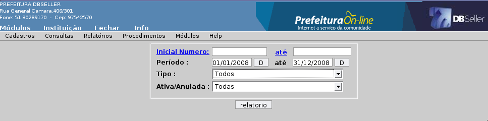
Figura
12
Na Figura 13 mostra um modelo de um relatório de Inicial / Data emitido no sistema.
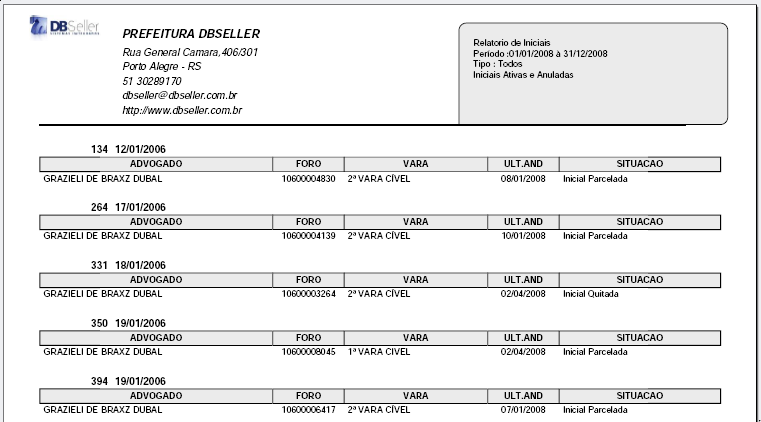
Figura
13
Esse relatório lista as iniciais quebrando por usuário e totalizando a quantidade de inicial por quebra.
Permite ter uma estatística dos usuários quanto a criação de iniciais no sistema.
Descrição dos campos abaixo e modelo de cadastro conforme Figura 14.
Opção: Permite selecionar se quer emitir com os dados selecionados no campo Usuários.
Tipo: Permite selecionar se quer emitir as iniciais com processo no foro ou sem processo.
Ativa / Anulada: Permite selecionar as iniciais ativas e anuladas no sistema.
Ordem: Permite ordenar por Inicial, Data, Foro e Situação as iniciais.
Período: Preencher o intervalo da data da inicial e final.
Usuários: Permite selecionar os usuários que se quer emitir no relatório.
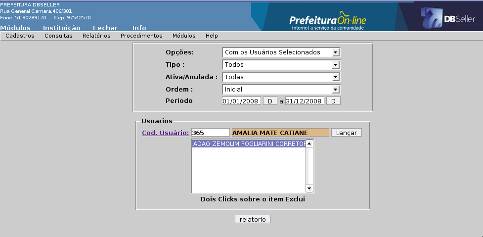
Figura
14
Na Figura 15 mostra um modelo de relatório de Usuário emitido no sistema.
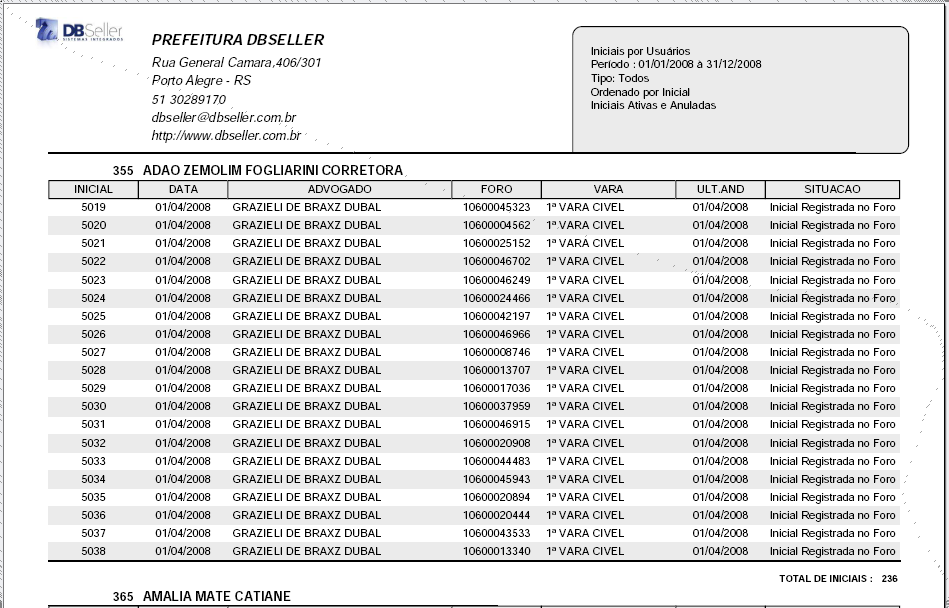
Figura
15
Lista as iniciais quebrando por advogado e totalizando a quantidade de inicial por quebra.
Permite saber quais as iniciais estão com os advogados no sistema, podendo utilizar o filtro por um período especificado.
Descrição dos campos abaixo e modelo de cadastro conforme Figura 16
Opção: Permite selecionar se quer emitir com os dados selecionados o campo Advogados.
Quebra: Permite fazer quebra no relatório por advogado.
Tipo: Permite selecionar se quer emitir as iniciais com processo no foro ou sem processo.
Ativa / Anulada: Permite selecionar as iniciais ativas e anuladas no sistema.
Ordem: Permite ordenar por inicial, data, foro e situação das iniciais.
Período: Preencher o intervalo da data da inicial e final.
Advogados: Permite selecionar os advogados que se quer emitir no relatório.
.
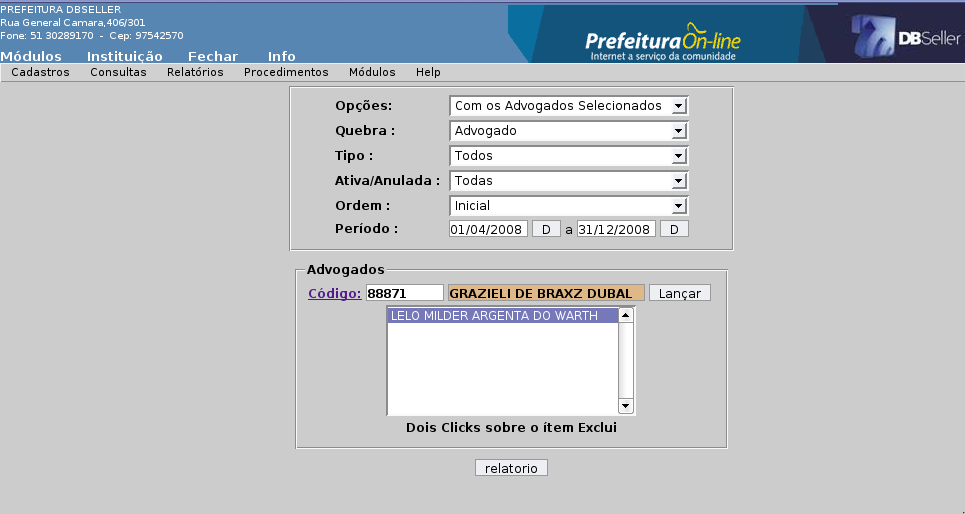
Figura
16
Na Figura 17 mostra um modelo de um relatório de Advogado emitido no sistema.
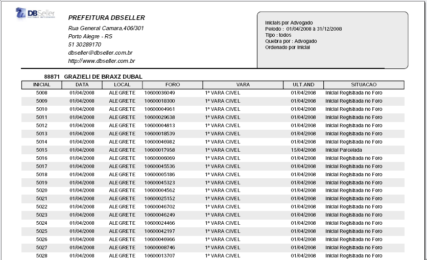
Figura
17
Esse relatório permite controlar os processos no foro, verificando em quais varas do foro foi distribuído o processo. Permite controlar os processos no foro por período.
Descrição dos campos abaixo e modelo de cadastro conforme Figura 18.
Opção: Permite selecionar se quer emitir com os dados selecionados o campo Vara.
Vara: Permite selecionar os advogados que se quer emitir no relatório.
Período: Preencher o intervalo da data da inicial e final.
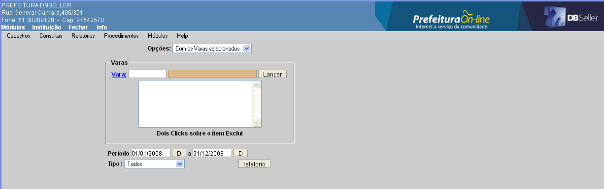
Figura
18
Na Figura 19 mostra um modelo de um relatório de Vara emitido no DBPortal.
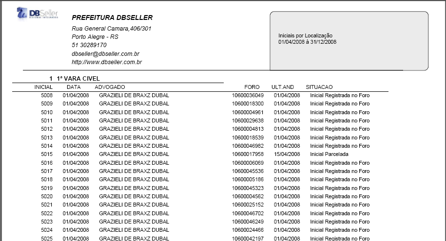
Figura
19
Nesse relatório o usuário controla o histórico da inicial no sistema, emitindo todo o movimento da inicial no sistema quebrando por situação.
Descrição dos campos abaixo e modelo de cadastro conforme Figura 20.
Opção: Permite selecionar se quer emitir com os dados selecionados o campo Vara.
Situação: Permite selecionar os situação que se quer emitir no relatório.
Seleção: Permite selecionar a situação atual ou qualquer situação da inicial.
Período: Preencher o intervalo da data da inicial e final.
Tipo: Permite selecionar se quer emitir as iniciais com processo no foro ou sem processo.
Figura
20
A Figura 21 demostra um modelo de um relatório de Movimento emitido no sistema.
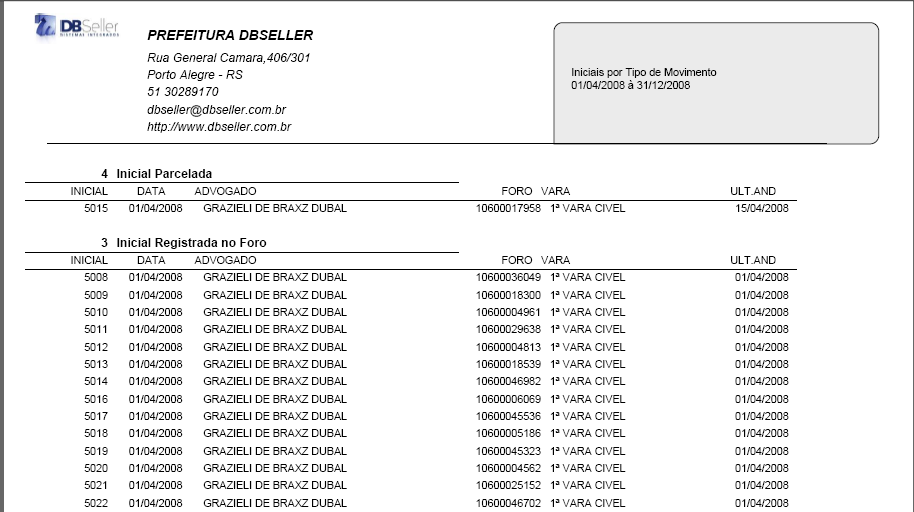
Figura
21
Nesse menu reemite as petições enviadas ao foro referentes aos parcelamentos e quitações das iniciais no sistema.
Esse relatório permite reemitir da petição de parcelamento de uma inicial do sistema, nesse caso, quando foi perdida ou o juiz pede a segunda via da petição.
Descrição dos campos abaixo e modelo de cadastro conforme Figura 22.
Petição: Preencher o código da petição ou clicar no link para pesquisar.
Figura
22
Na Figura 23 mostra um modelo de um relatório de Petição Parcelada emitida no DBPortal.
Figura
23
Nesse relatório permite reemitir da petição de quitação de uma inicial do sistema, nesse caso, quando foi perdida ou o juiz pede a segunda via da petição.
Descrição dos campos abaixo e modelo de cadastro conforme Figura 24.
Petição: Preencher o código da petição ou clicar no link para pesquisar.
Figura
24
A Figura 25 mostra um modelo de um relatório de Petição Quitada emitida no DBPortal.
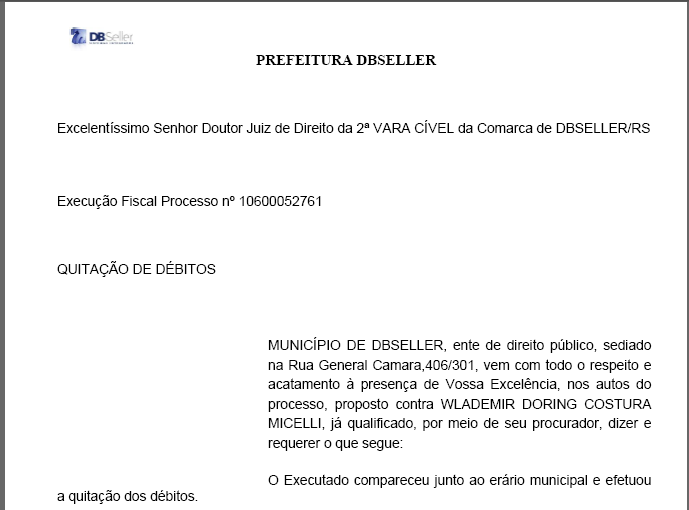
Figura
25
Permite emitir uma lista de inicial com seus dados financeiros e sua situação no sistema.
É o principal relatório do módulo Jurídico, podendo filtrar por todas opções do sistema.
Descrição dos campos abaixo e modelo de cadastro conforme Figura 26.
CGM: Preencher o campo CGM ou clicar no link para pesquisar.
Situação: Preencher o campo Situação ou clicar no link para pesquisar.
Período: Preencher o intervalo da data da inicial e final.
Advogado: Preencher o campo Advogado ou clicar no link para pesquisar.
Vara: Preencher o campo Vara ou clicar no link para pesquisar.
Ordem: Permite ordenar por Inicial, Data, Foro e Situação as iniciais.
Tipo: Permite selecionar se quer emitir as iniciais com processo no foro ou sem processo.
Valor Corrigido: Emite as iniciais da lista com os valores corrigidos até a data preenchida.
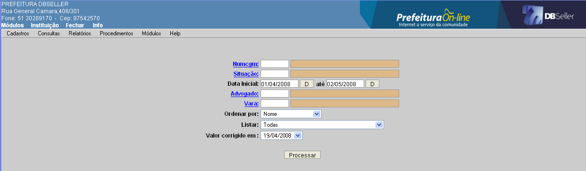
Figura
26
A Figura 27 mostra um modelo de um relatório de Movimento emitido no DBPortal.
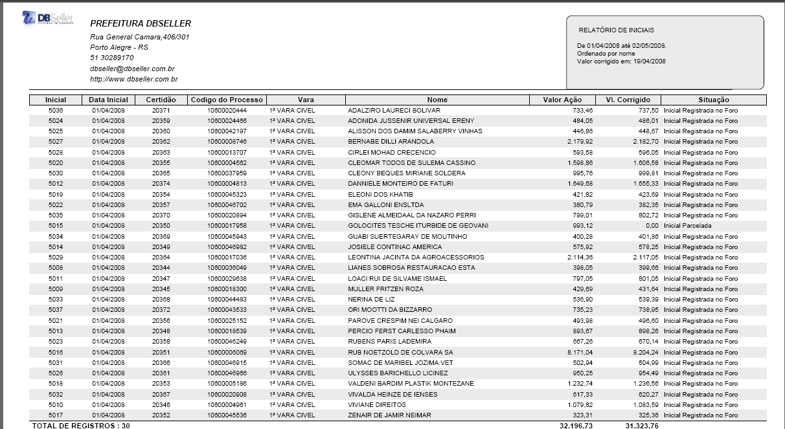
Figura
27
Nesse procedimento são cadastradas as situações da inicial manualmente, pois algumas situações de iniciais são lançadas automaticamente conforme o procedimento executado no sistema.
Portanto, caso alguma situação não vinculada a nenhum procedimento pode ser lançada manualmente na inicial.
Descrição dos campos abaixo e modelo de cadastro conforme Figura 28.
Inicial: Preencher o código da inicial que será incluída ou clicar no link para pesquisar.
Situação: Preencher o código da situação ou clicar no link para pesquisar.
Observação: O usuário pode descrever alguma observação da situação.
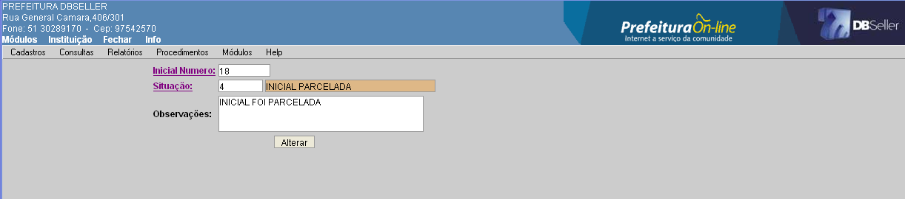
Figura
28.
Nesse procedimento é cadastrado uma Inicial do Foro no sistema.
O usuário pode cadastrar pelo menu Inclusão ou Inclusão (Intervalo).
A Inicial é cadastrada através de uma CDA (certidão de dívida ativa) e após é enviada ao foro, onde é gerado o processo de execução contra o contribuinte.
A inicial para ser gerada no sistema, deve ser vinculada a um advogado e uma comarca (localização do foro).
Nesse menu o usuário gera um inicial para cada CDA do sistema.
Descrição dos campos abaixo e modelo de cadastro conforme Figura 29.
Matrícula: Preencher o código da Matrícula do Imóvel ou clicar no link para pesquisar.
Inscrição: Preencher o código da Inscrição Municipal ou clicar no link para pesquisar.
CGM: Preencher o código do CGM ou clicar no link para pesquisar, buscando todas as CDA referente a esse CGM.
Certidão Inicial / Final: Preencher o código inicial e final da certidão de um determinado intervalo para gerar as iniciais.
Gera uma nova tela com as CDA(s) que foram selecionadas nos campos acima.
Todas CDA já vem marcadas, e caso não queira incluir alguma CDA(s), basta desmarcar.
No final, emite uma comprovante de Inicial do processo para ser enviado ao Foro conforme Figura 30.
Figura
29
Advogado: Preencher o código do advogado responsável pelo(s) processos ou clicar no link para pesquisar.
Localização: Preencher o código da localização do Foro ou clicar no link para pesquisar.
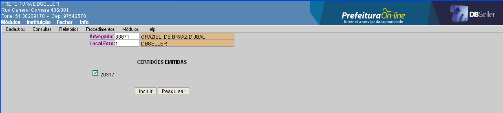
Figura
30
Nesse menu permite o usuário gerar uma inicial por CDA ou uma Inicial para várias CDAs, caso o campo Agrupar estiver selecionado por (Matricula / Inscrição) ou (CGM).
Descrição dos campos abaixo e modelo de cadastro conforme Figura 31.
Certidão Inicial / Final: Preencher o código inicial e final da certidão de um determinado intervalo para gerar as iniciais.
Advogado: Preencher o código do advogado responsável pelo processo ou clicar no link para pesquisar.
Localização: Preencher o código da localização ou clicar no link para pesquisar.
Agrupar: Permite selecionar a maneira que se quer gerar as iniciais no sistema.
Ao selecionar Matricula/Inscrição ele gera uma inicial para cada matrícula ou inscrição, agrupando as CDAs.
Por CGM ele agrupa todas as CDAs de um CGM por inicial.
A opção Nenhum não agrupa e gera uma inicial para cada CDA.
Normalmente a opção escolhida é a por Matricula/Inscrição, principalmente pelo fato do ocorrer freqüentemente casos dos contribuintes venderem algumas matrículas e durante o processo de ajuizamente querem pagar os débitos referente a uma determinada matrícula em separado, e, nesse caso, quando as petições são geradas por CGM, geram um transtorno, pois a prefeitura tem que anular/alterar uma inicial inteira, apenas por causa de uma parte relativa a uma matrícula por exemplo.
Figura
31
Nesse menu permite alteração da Inicial, no(s) campo(s): Advogados e Localização do Foro.
Nesse menu permite a exclusão da Inicial, mas apenas quando a inicial não foi cadastrada/vinculada ao código do processo e/ou não foi parcelada.
Essa opção serve quando o usuário gera uma inicial errada e precisa excluir do sistema, conforme mostra a Figura 32 abaixo.
Figura
32
Nesse menu permite anular uma inicial.
Caso a inicial foi vinculada a um processo no foro e a um parcelamento, deve ser anulada para não perder as informações referentes a essa inicial no sistema.
Ao anular uma Inicial, ela volta para CGF como uma CDA, e registra automaticamente uma situação com “Inicial Anulada”.
Nesse menu é cadastrado o procedimento que é feito a inclusão do número dos processos no foro.
Obs: Na distribuição das iniciais no Foro é gerado o código do processo e a vara no qual foi distribuída.
É a forma de “avisar” ao sistema de que a petição foi recebida pelo Foro, e a partir desse momento, o sistema libera o débito para ser movimentado: pago/parcelado.
Descrição dos campos abaixo e modelo de cadastro conforme Figura 33.
Código da Inicial: Preencher o código da Inicial ou clicar no link para pesquisar.
Código do Processo: Preencher o código do processo distribuído no Foro. Normalmente é um código semelhante a: 005/3.06.0007822-7.
Código da Vara: Preencher o código da Vara onde foi distribuído ou clicar no link para pesquisar.
Figura
33
No cadastro permite alterar os campos: código do processo e vara.
Não permite excluir os processos de uma Inicial quando ela estiver parcelada no sistema.
Nesse menu o sistema busca todas as petições parceladas e quitadas no sistema.
Quando o usuário marca a inicial e clica em emitir, o sistema gera um código de petição para essa inicial e emite um documento para o advogado enviar para o foro.
Nesse menu é cadastrado uma petição de parcelamento no sistema ao marcar uma inicial e clicar em emitir.
Assim o sistema emite um petição de parcelamento e retira da lista, podendo ser reemitida no menu Relatórios > Emite Petição > Parcelamento.
Descrição do procedimento conforme Figura 34 abaixo.
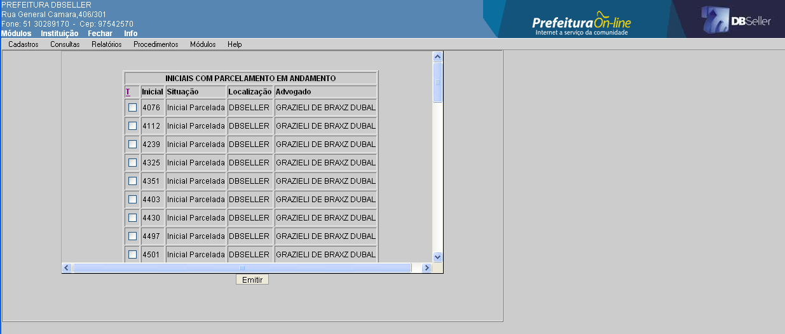
Figura
34
Nesse menu é cadastrado uma petição de quitação no sistema ao marcar uma inicial e clicar em emitir.
Assim o sistema emite um petição de quitação e retira da lista, podendo ser reemitida no menu Relatórios > Emite Petição > Quitado.
Descrição do procedimento conforme Figura 35 abaixo.
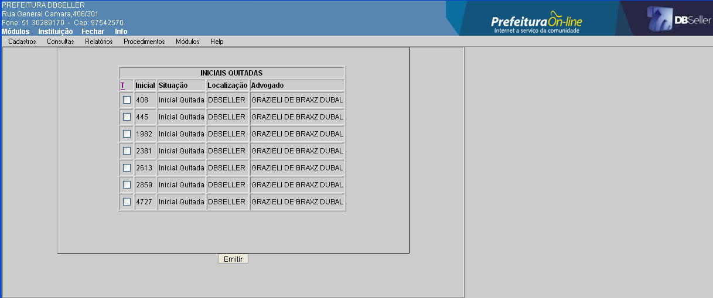
Figura
35
|
DBSeller Serviços de Informática Ltda. – www.dbseller.com.br Rua General Câmara, 406/301 – Porto Alegre/RS – Fone: (51) 3076-5101 |
|